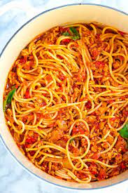

Spaghetti Recipe

Description
Another Brilliant meal that will leave you refreshed. As you can tell, I love italian food!
Ingredients
- 2 packages Angel Hair Pasta
- 3 cups, Tomato sauce
- 2tbs Salt
- 1tbs basil
- 1lb Ground Beef
Steps
- Put the pasta in a pan and bring it to a simmer for 6 mins
- Put the tomato sauce in a seperate pan to a simmer for 5 mins
- Put ground beef in a pan and cook it on high until browned
- Mix it together and enjoy!